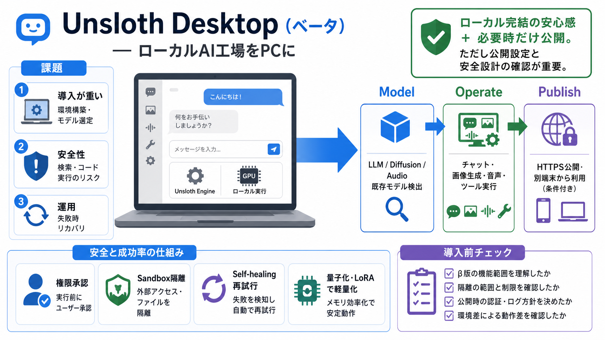

Local-first / ローカル優先
クラウドではなくGPU/CPUで動かす（macOS/Windows/Linux・WSL想定）。

Unsloth Desktop（ベータ）は、LLMや拡散・音声モデルをユーザーのPC上で「実行し、（可能なら）学習し、必要なら公開まで」行うための無料・オープンソースデスクトップアプリです。
ローカルでAIを動かすと、モデル選定・ダウンロード・環境差・安全設定などの負担が増えがちです。一方で「何ができるか」をまとめて把握しにくいことも課題になります。
Unsloth Desktopは、モデルを「置いて使う」だけでなく、検索や実行など外部機能も含めて仕事を前に進める“作業場”としてまとめることを狙っています（実行→学習→公開）。
モデル選択→ダウンロード→チャット開始、という導線を“デスクトップUI”に落とし込みます。さらに、必要に応じて公開（HTTPSトンネル）へ接続できる設計です。
ツール呼び出し（検索・コード実行など）で失敗した場合に検知・修復して再試行する「self-healing」を主張し、成功率を高める方向性です。
ツール呼び出しの危険性を前提に、ファイルアクセスやインターネット利用などの権限を段階的に制御し、サンドボックスで隔離実行する考え方を明示しています。
ローカルで完結する利点（データを外に出しにくい等）を維持しつつ、CloudflareトンネルでHTTPS経由に公開し、別端末から利用できるようにします。
LLMのチャットだけでなく、ローカル微調整、拡散モデルの生成、音声の生成/文字起こし、一部のデプロイまでをアプリ内で扱う方針です。
量子化（Quantization）は計算量とメモリ使用量を抑える技術で、GPU/VRAM制約下で動かすために重要です。LoRAは学習を軽量化する手法として位置付けられます。
ダウンロード済みモデルは自動検出し、見つからない場合は独自フォルダ指定が可能とされています。さらにOpenAI互換APIなど外部接続にも対応する旨があります。
強みは、ローカル統合・権限制御・サンドボックス・self-healingで運用の手間を下げようとする点です。一方、ベンチマーク条件や公開機能の安全設計は追加確認が必要です。
Unsloth Desktopの方向性は実用的ですが、β版として「どの機能がどの設定で有効か」「隔離の範囲」「公開時の認証・ログ・データ取り扱い」を確認すると安心です。
No references found